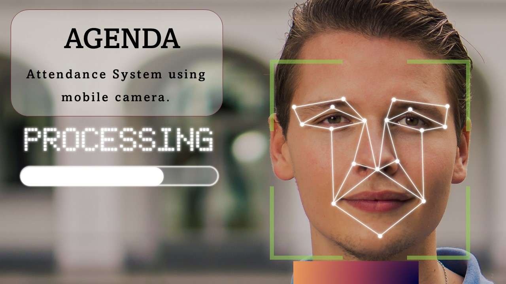
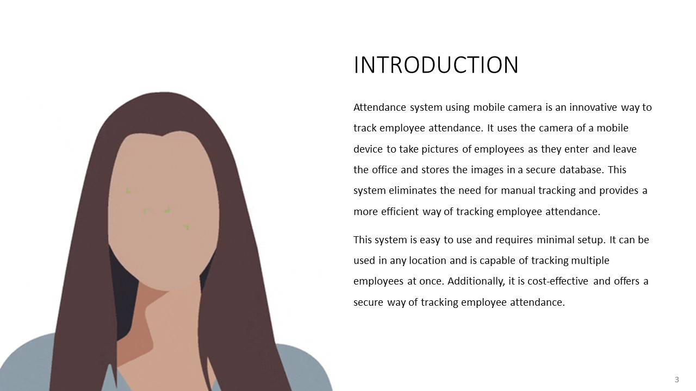
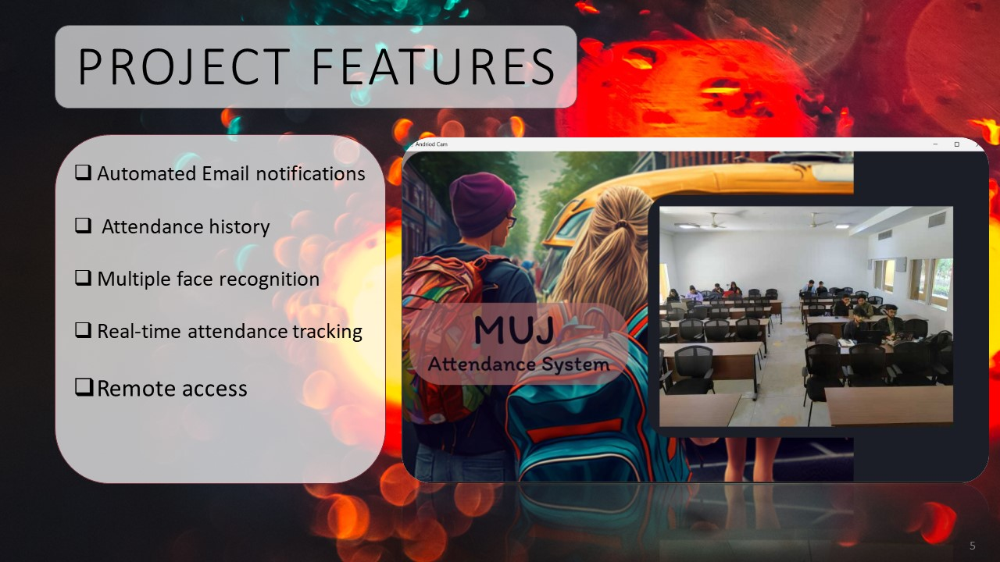
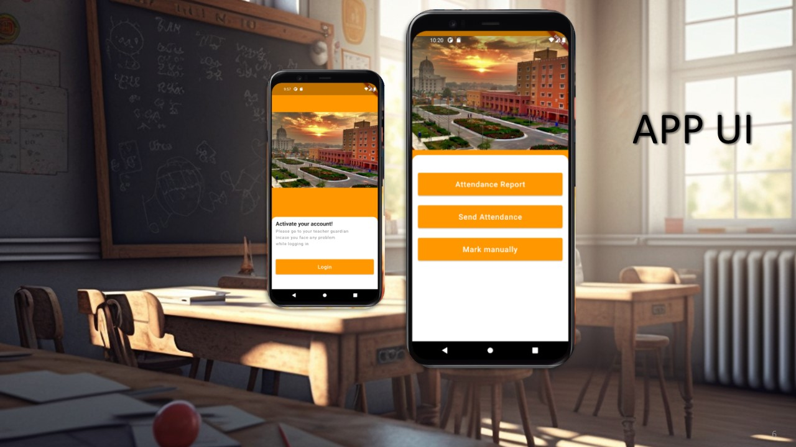

MUJ Attendance 2.0 is an AI-based attendance tracking system that leverages mobile camera technology and face recognition to provide a more efficient and accurate way of tracking attendance. The system eliminates manual tracking and supports multiple employees or students simultaneously.

How It Works
The system uses the device camera to capture images as individuals enter. Images are stored in a secure database accessible only by authorized personnel. AI-based face recognition identifies individuals and records their attendance automatically.
- Automated email notifications: Updates on attendance status sent to students and instructors.
- Multiple face recognition: Recognizes multiple faces simultaneously for high-throughput environments.
- Real-time tracking: Attendance is logged live and accessible at any time.
- Attendance history: Maintains a full record for performance tracking.
- Remote access: Manage attendance from anywhere.
Demo Video
Presentation Slides




Future Directions
Planned enhancements include cloud-based deployment, mobile app integration, liveness detection to prevent spoofing, multi-language support, automatic report generation, and integration with HR systems.